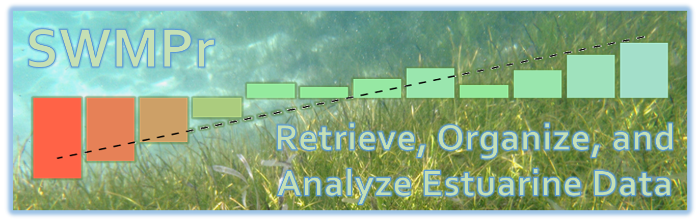

The System Wide Monitoring Program (SWMP) was implemented by the National Estuarine Research Reserve System (NERRS) in 1995 to provide continuous monitoring data at over 140 continuous monitoring stations in 28 estuaries across the United States. SWMPr (pronounced “swamper”) is an R package for retrieving, organizing, and analyzing estuary monitoring data from SWMP.
See the website for additional information.
Issues and suggestions
Please report any issues and suggestions on the issues link for the repository.
A guide to posting issues can be found here.
Contributing
Please view our contributing guidelines for any changes or pull requests.